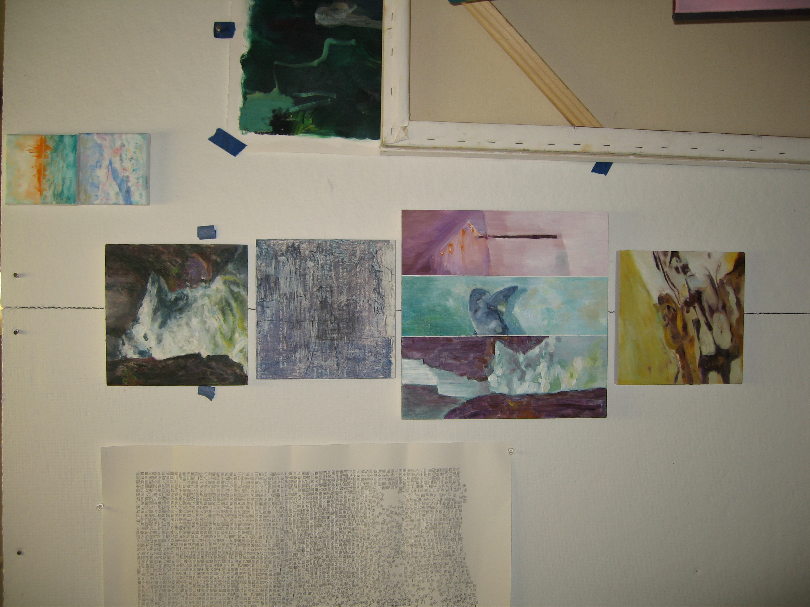
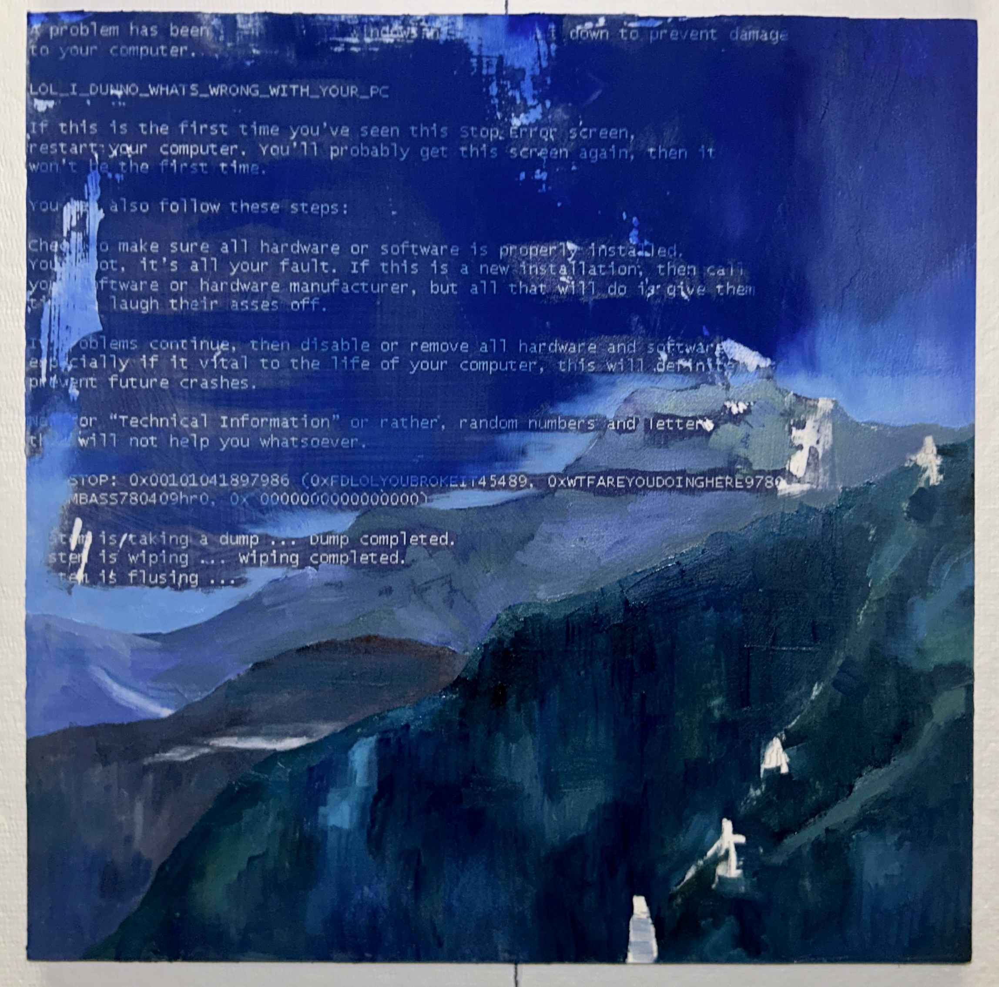
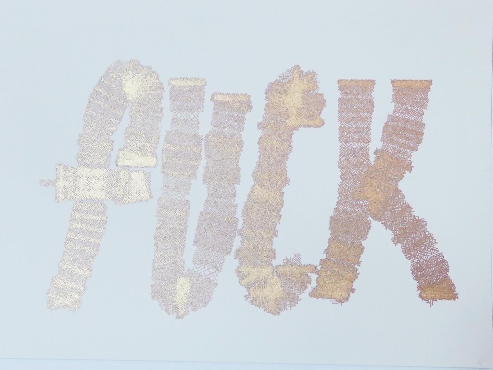

Over two years my studio and bedroom at CMU accumulated a specific kind of density — things placed, moved, replaced, forgotten. The arrangement of the space was an ongoing record of how institutional life reshapes daily habits. At the end, before I left, I scanned it.
Capture used Scaniverse on an iPhone (LiDAR + visual SLAM), with 3D Gaussian Splatting trained from the resulting point cloud. The harder problem was making the result navigable and legible. I wanted each object to be queryable — not labeled by hand, but surfaced through the geometry of the space itself.
The segmentation pipeline weighs surface normals at 2.5× position features to identify object boundaries in a densely-packed scene, then applies HDBSCAN clustering, CLIP for non-taxonomic semantic queries, and SAM for 2D instance masks. Visibility scoring prunes floater Gaussians in free space. The interface avoids gallery conventions: it's a command-line-style filesystem with typewriter reveals and first-person navigation. Objects appear as evidence, not displays.
Conceptually the work sits with Tracey Emin's My Bed and Gala Porras-Kim's archival practice — the idea that a room, documented thoroughly enough, becomes a primary source.
- advised by
- Ioannis Gkioulekas
- built with
- spark.js (World Labs), Three.js, HDBSCAN, CLIP, SAM
- part of
- BXA Capstone program, Carnegie Mellon University
- links
-
live experience →
substack writeup →





